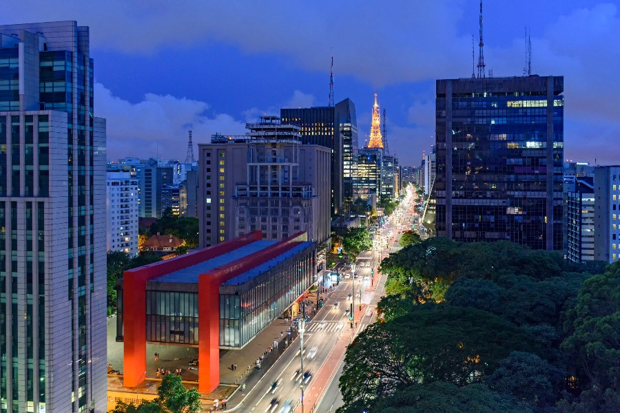
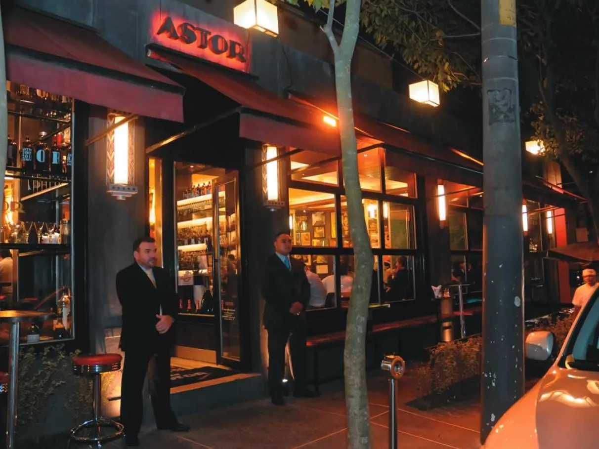
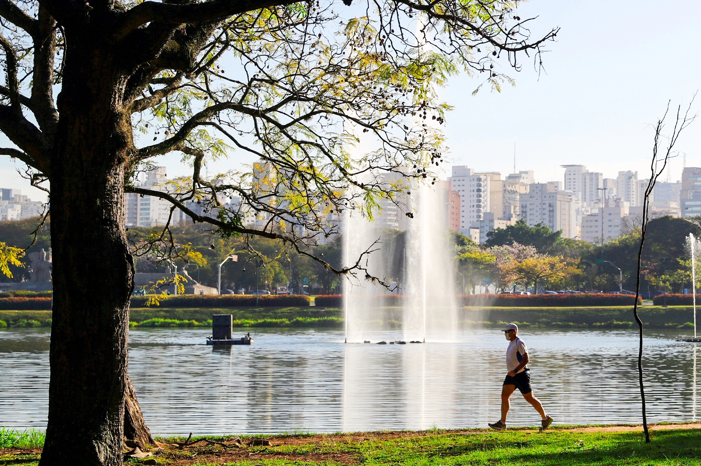

O que eu mais gosto em São Paulo!
Passear na Avenida Paulista!

Um dos principais centros financeiros da cidade, a avenida Paulista
também possui diversas opções de entretenimento. Endereço do Museu
de Arte de São Paulo, MASP, do Teatro Gazeta e muitos
outros...
A Avenida Paulista sempre é assunto. O que será que estão falando a
respeito no Twitter
Os bares da Vila Madalena

Depois de um dia de trabalho, nada melhor do que um bom chopp,
um petisco e uma conversa em uma mesa de bar. Opções de sobre
na região das ruas Aspicuelta, Fradique Coutinho e Wisard.
O Parque do Ibirapuera

Um dos cartões postais da cidade, o parque dispõe de mais de
1,5 km2 de área verde, lagos artificiais e pistas de cooper
e ciclismo. E se isso não fosse o suficiente, o parque costuma
ser palco de diversos eventos culturais ao longo do ano.